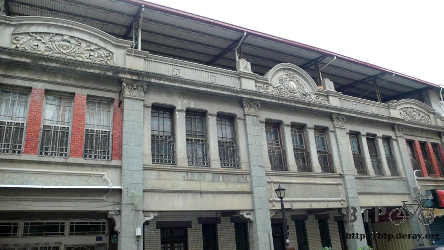
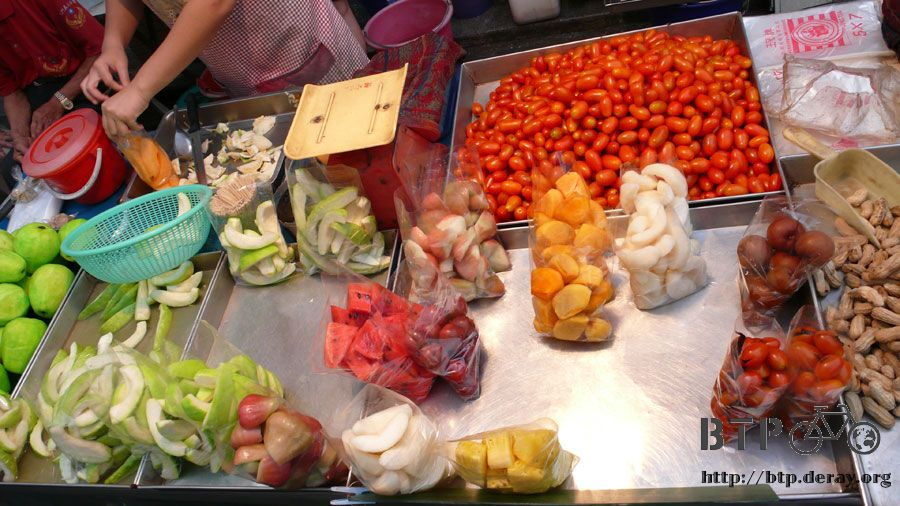
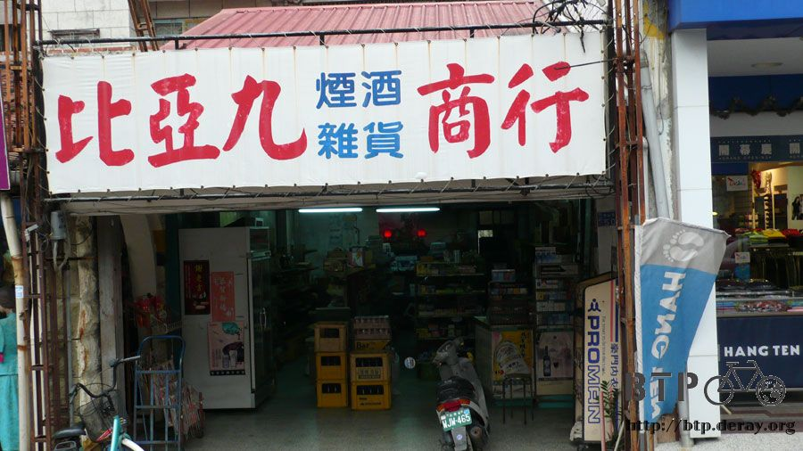
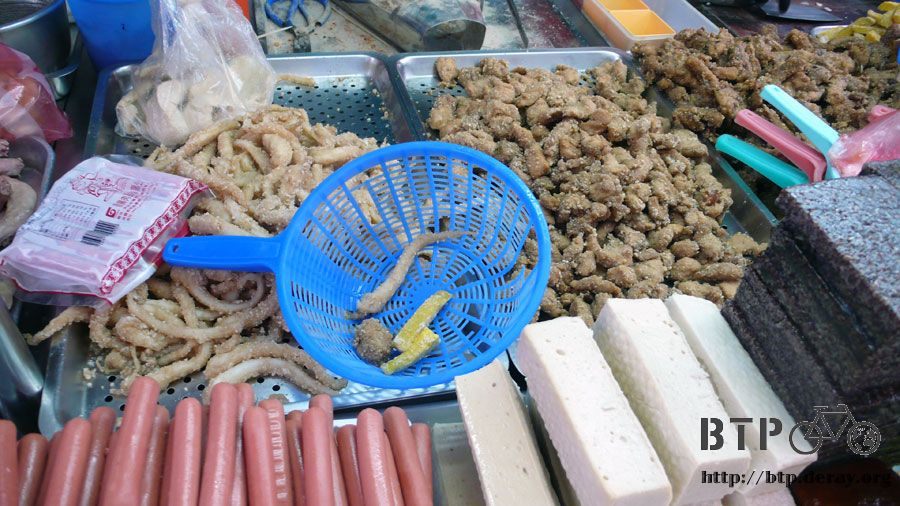

旗山好好吃
連續兩天的睡眠品質跟睡在地獄沒兩樣，到了旗山之後終於可以洗舒服的熱水澡，晚上不用窩在小小的單人帳裡面躲蚊子。
吃完宵夜回到生活園區，吹著涼涼的電風扇、躺在草蓆上面睡大頭覺，這一夜真是舒服。
可是早上睡醒之後立刻就感冒了，瞬間放鬆精神的時候，什麼奇怪的病都會冒出來，還好沒有發燒，只是喉嚨很痛說話很啞。
今天打算在旗山休息一天，才不過騎了四天的車，兩隻腳居然已經鐵腿，騎車的時候只要太陽大一點、山路陡一點，也很容易抽筋。
真想跟自己說爭氣一點，怎麼從北京騎到巴黎那麼容易，環個台灣卻吃足苦頭，再次認定能夠完成單車環島的人都很神勇。
相較之下，從北京騎到巴黎反而比較像在郊遊。
睡了一覺精神好很多，除了喉嚨超級痛之外，還有走路的樣子很奇怪，大腿很僵硬，走路像是機器人一樣。
柯老師說要帶我去吃早餐，一睡醒就可以想用旗山的美食，無比開心～
這個是柯老師用枝仔冰城的紙箱做成的彈珠機，手藝真是很巧，仔細看，彈彈珠的東西就是挖冰的木頭冰棒湯匙喔。
佩服之餘，肚子還是很餓，趕緊去吃飯吧～
住的地方離老街只有三百公尺，但我們還是決定騎車出去，柯老師騎著車帶我穿越老街，晚上是夜市，早上則是熱鬧的菜市場。
今天的早餐是這個，非常好吃又老牌的炒米粉店，可惜這邊連招牌都沒有，只好拍下店家的正面，幫助各位尋找到這個美味的地方。
最有名的就是炒米粉，另外還有炒麵，肉羹麵的做法很酷，就是用炒麵淋上肉羹，也可以選擇兩種口味混合吃的米粉麵。
小菜是一定要切的紅燒肉，不用我多介紹，光是用看的就可以殺死人>"<
住在台灣的人應該還好，想吃的話，家裡附近也可以買到類似的食物，要是旅居在海外的同胞看見這些美食，應該很搥胸頓足吧？
吃米粉怎麼不配個湯呢，這一碗是粉腸湯。
這個不用介紹，豬血湯。
看起來很簡單，吃起來超好吃，而且價錢便宜到爆炸，以台北的物價來看，根本就是吃米粉免費附湯。
吃完早餐之後，去菜市場買了一大串的香蕉，這也是旗山最有名的特產之一，蜜蕉。
蜜蕉的特色在於，皮非常的薄，香蕉很大一根，胖胖短短的，口感很Q，簡直像在吃麻吉，既然叫做蜜蕉，當然甜度也是很驚人。
多吃香蕉可以幫助消化，聽說對於預防抽筋也有效，當作飯後水果嗑了兩根，然後我就不支的再度睡著。
前幾天大概真的累到了，加上感冒的關係，多睡一下也沒什麼不好，早點恢復精神跟體力才能完成接下來的環島旅程。
這一睡就從中午睡到下午三點多，起床伸個懶腰去洗把臉，精神果然好很多，再過不到兩個小時天就要黑了，把握時間去老街逛逛。
早上熱鬧的菜市場已經收的差不多了，只剩下非常零星的幾個攤位還在賣。
這邊賣的是非常有名的竹山番薯。
相呼應的就是也很有名的甲仙芋頭。

用這個芋頭做出來的芋頭冰淇淋，簡直好吃到整個人都要飛到天堂去！
騎著車到處亂晃，這一條是石頭護岸，全都是用石頭堆出來的。
用意是要防止水患，從1943年堆築至今，緊護著旗山溪的溪流，保護著旗山鎮居民的生活安全，也是散步的好地方。
這個很多樓梯的地方，是中山公園，又稱鼓山公園，居然已經超過一百年的歷史。
在日據時代，沿著階梯都建有日式古典石燈，同時還有大鳥居，二戰之後則被拆光光，現在最頂端加蓋了一棟孔廟。
從公園的頂端可以鳥瞰整各旗山鎮和附近的山勢，景色很美麗，很適合環山健行。
這邊是老街的入口，裡面的店家都是超好吃的小吃，除了一些外來的加盟餐廳除外。
旗山老街有一整排的建築物，屋頂上有仿巴洛克的洋樓街屋，在1920年代就有這樣前衛的建築設計。

此風格建築是歐洲人在十九世紀於東南亞殖民地所發展的仿巴洛克風格，後來經由日本遊學歐洲的建築師所改良，
變成如今的『台灣牌樓厝』，除了外觀比較新穎之外，其內部大多仍為閩南的木磚建築。
主要的特色還是屋頂上的『山頭』，用繁複的裝飾圖案表現當時工匠的巧思和手藝。
仔細看店家的招牌，有一個寫著番薯寮老街，其實以前旗山還不是個鎮的時候，被稱為番薯寮。
原因可能是因為當時的人要從屏東里港運送番薯到台南去販賣，因為路途遙遠，所以就在中間段的旗山設立轉運站，也就是番薯寮的由來啦。
現在物價一直漲，什麼東西都好貴，不論吃外食還是自己開伙都一樣。
前陣子想買盒雞蛋，以前印象中一盒大概二十幾元，現在居然漲到四十元！
還是南部的物價比較低廉，要是很會吃的人也可以買個一箱回去。
店家的招牌還有標明下蛋的時間，跟麵包店會標明麵包出爐的時間有異曲同工之妙。
醒來之後很快的肚子就餓了，先買一包水果墊墊肚子。

全台灣也很多切好的水果攤，可是都好貴，而且才小小一包，這邊都是整包裝到滿滿滿～好吃又便宜
吃的剛買的哈密瓜，繼續逛我的旗山老街，這裡還保留了很多傳統的商家，沒有一股腦都變成現代化的便利商店。

看著這些傳統又有趣的名字，以及兒時記憶中才存在的雜貨店形象，真是倍感熟悉呀...難道我也老了@@"
老街走到盡頭就是旗山火車站，目前已經沒有使用，火車也不會開到這邊來，因為連鐵軌都拆光了。
目前正在研擬重建修復的計畫，只是這種年代久遠的建築物，幾乎都是純木造的房舍，要修復一定是很高難度的工作。
右邊那間朝林鮮果汁，就是昨天晚上吃杏仁豆腐的店家，招牌上寫著六十年老店的顏色都已經磨損掉了。
不知道是多少年之前就已經六十年，現在絕對不只這個歲數了，店面小小的，但是果汁跟杏仁豆腐都好好吃喔～
隔壁則是自行車行，是我在旗山看到的唯一一間車行，而且還是傳統的那種阿公店喔，一整個給它很懷念。
看到車店就想起一件事情，這次環島沒有帶任何的維修工具，包含內胎、打氣筒，所有東西都放在家裡。
想說環個島而已應該不會那麼倒楣爆胎吧？四年前真的很倒楣爆過胎，這次依然不信邪，硬是要啥都不帶就出發環島。
這一間寺廟是旗山人的精神信仰中心，天后宮。

年代久遠的嚇死人，建於西元1816年，小小一間廟蓋了足足八年，主祀『天上聖母』。
放在門口的兩尊則是千里眼跟順風耳。
可愛的石獅子，下面還有一隻迷你的小石獅。
在天后宮附近有一個老伯伯，他是專門製作豆芽菜的。
豆芽菜的做法很簡單，把綠豆泡到水裡，整整浸泡個五天，就會從綠豆變成豆芽菜。
聽起來很簡單，所以家裡有綠豆的人也可以DIY試試看，但是記得要每三個小時換一次水。
這個傳統製作豆芽菜的工作，從老伯伯的爸爸傳到他手上，兩個人加起來已經做了整整一百年以上。
直到今天依然都是純手工進行，每三個小時換水一次，不用機器代勞，水則是井裡的水。
不用多說，這口井也是一百年前就已經開鑿好的，而綠豆就泡在那一缸缸的水缸裡。
如此簡單又純粹的工作堅持了一百年，非常令人感到佩服，可惜等過了老伯伯這一代之後就要失傳了。
這邊是天后宮的正後方，又回到了老街的所在地，昨天在這裡吃了臭豆腐，現在天色還早，連學生都還沒下課，等晚一點之後人潮就會開始湧現。
白天清楚的看這一棟枝仔冰城，賣冰可以賣到八十年還屹立不搖，今年7-11的月餅第一名就是他們家的芋頭冰，有吃到的人客真是好口福啦。
老街的地上畫著旗山鎮的標示，後面那一撇黑色的線條就是旗山，因為形狀看起來很像飄揚的旗子，所以才把這邊命名為旗山。
昨天有來這一攤喝過豆漿紅茶，它的名字是許家豆花，旗山常常有電視台來拍攝美食節目，很多店家都不停的報導。
幾乎每一個攤位或是店家都有掛著電視台採訪之後的留念照片，在旗山千萬不要去吃連鎖的飲食店，當地的小吃絕對會讓你吃到不想回家。
這個是旗山的學校，居然蓋的那麼漂亮，不禁讓我嫉妒起來，為啥米我唸的學校就蓋的很普通，還像監獄一樣。
這個時候已經是學生下課的時間了，大家都跑去老街買東西吃，看著人多的地方跟著去買絕對不會錯。
旗山巷弄中可以看見很多的老房子，還好這邊沒有土石流也很少聽說有颱風災情，希望這些古色古香的房子可以一直流傳下去。
超級令人懷念的玩具店，有各種的桶子裝零食，還有各式奇怪的玩具，溜溜球、四驅車、超人玩偶等等。
在旗山閒晃的時候彷彿時空整個都倒流了～
很古早味的巷弄，招牌中的民俗療法，推拿、修指甲、收驚，這三種聽起來截然不同的東西，居然可以一起服務。

買點明天要吃的零食，我很喜歡吃甜甜的雙胞胎，它是一種炸的麵包灑上砂糖，因為都是兩個形狀一樣的麵包串在一起，所以叫做雙胞胎。
沒有吃過的人那你就是沒童年啦～其他還有好多都想買，像是麻花捲，那個也很好吃說(流口水)
這邊好像離台北很遠的感覺，店家還要掛出正宗台北口味當作噱頭，不過就是個台北，台北有什麼特別的地方嗎？
與其吃一般的連鎖店，不如吃這一家號稱是全南台灣最好吃的鹽酥雞店！
阿婆香雞排
一下課的學生馬上將這邊團團包圍住，等了好久才輪到我，呼呼～大吃一頓的時候到了。
有人帶著我吃飯的時候，我才會吃正餐，自己吃的時候都會亂吃一些有的沒的，像現在就打算買一堆鹽酥雞回去當晚餐。
這一籃不是我夾的，我食量沒那麼小，只是覺得台灣有些特色真是很有趣，像是鹽酥雞，只要夾一根魷魚，就表示要一份的意思。

如果老外看到了，應該會覺得怎麼這個人的胃口那麼小，才吃這一點點連塞牙縫的東西都不夠。
買了香香的炸雞排，超大一塊，不剪開的話根本塞不進紙袋哩，還可以灑上切成薄片的大蒜，味道很配。
拎著兩大袋的鹽酥雞回去園區，今天就這麼告一段落了，只騎了五公里的車繞了老街幾圈就算收工。
在旗山的香蕉王國牌子上簽名留念
今天睡的很飽、吃的也很好，明天又可以繼續騎車完成環島之旅～真開心有安排旗山這一站，從餐風露宿轉變成吃香喝辣的感覺實在太爽啦。
繼續閱讀：10.17 國境之南